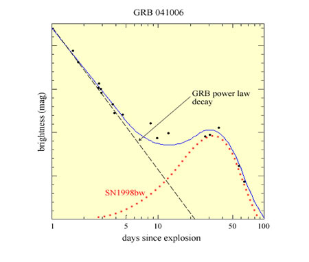
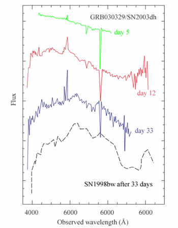

Almost all astronomers now agree that long duration gamma ray bursts (GRBs) coincide with hypernovae, powerful supernovae that occur when a massive star collapses to a black hole. Evidence in support of this theory is four-fold and comes mostly from the study of the optical transients associated with these GRBs.

The first evidence for a supernova-GRB connection was the discovery of SN1998bw, an energetic supernova (or hypernova) which was spatially and temporally consistent with the GRB GRB980425 (named as such because it was detected on April 25th, 1998). While suggestive, it was not possible to pin down the exact time of explosion for the supernova, leaving astronomers considering the possibility of a connection, but awaiting more evidence.
Studies of the host galaxies of GRBs revealed that GRBs are found in the star forming regions of these galaxies. This also suggested that young, massive stars (the progenitors of core-collapse supernovae) somehow produce GRBs.
Further evidence came from the late-time optical light curves of some GRBs which showed a rebrightening at about 20-30 days after the GRB. By superimposing the optical and near-infrared light curves of SN1998bw over the fading GRB afterglow, astronomers were able to fit this rebrightening successfully across the entire optical and near-infrared wavelength range.
Astronomers finally obtained conclusive evidence for the supernova-GRB connection in 2003 when a SN1998bw-like spectrum emerged from the spectrum obtained of the optical transient of GRB030329 (discovered 29th March, 2003). At early times, the spectrum was a simple power-law typical of GRB afterglows, but by about day 7 after the GRB, broad peaks characteristic of supernova spectra emerged and ultimately dominated the spectrum.

Here, at last, was the evidence to conclusively tie at least some GRBs to the deaths of massive stars, and the good news is that the hypernova model for GRBs can very easily produce bursts of long duration.